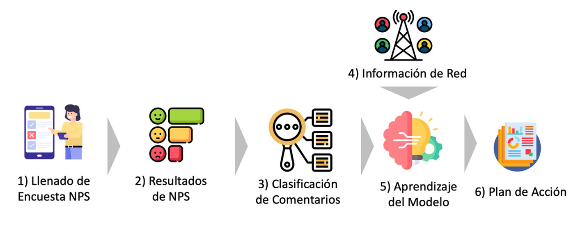
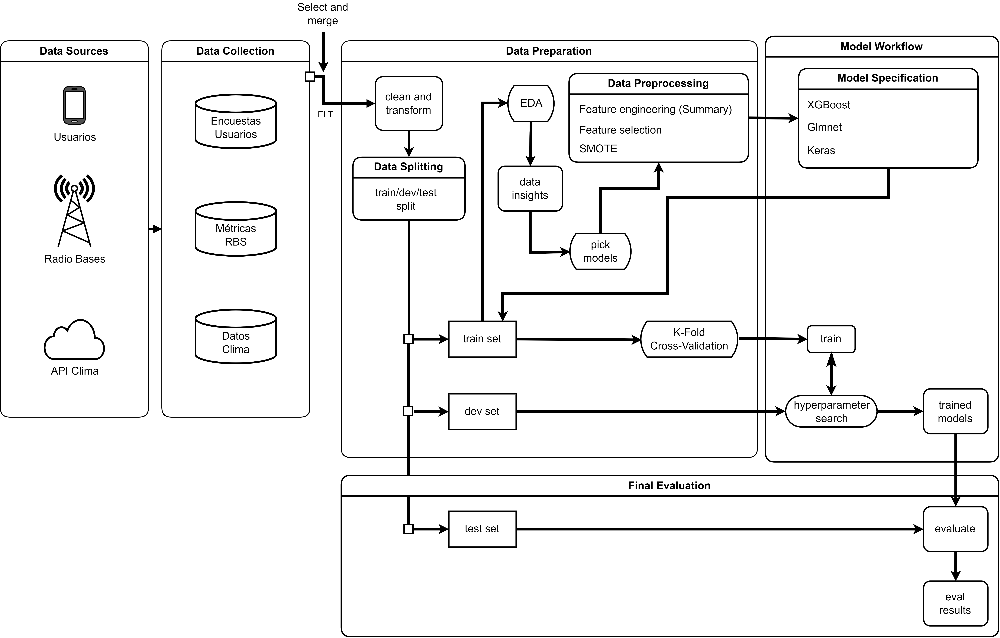
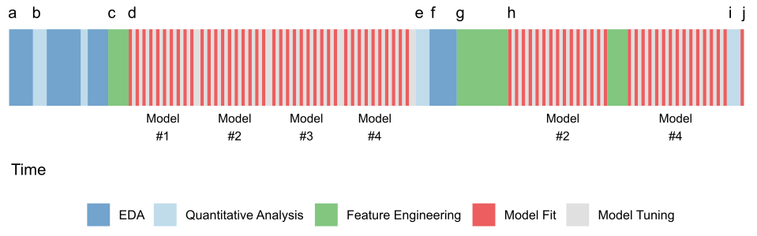

erDiagram
DIAGNOSTICO ||--o{ METRICAS_RBS : has
DIAGNOSTICO ||--o{ DATOS_CLIMA : has
DIAGNOSTICO {
int msisdn_dd
int srvy_id
}
METRICAS_RBS {
int msisdn_dd
int srvy_id
}
DATOS_CLIMA {
int msisdn_dd
int srvy_id
}
4 Metodologia
Este estudio se realizó durante el tercer trimestre de 2023. La investigación apuntó a determinar los detractores de red mediante una combinación de variables cualitativas y cuantitativas. Las cualitativas incluyen la ubicación del usuario en Guatemala y el tipo de dispositivo, mientras que las cuantitativas abarcan aspectos como el tiempo en LTE en los sitios de uso. Es relevante mencionar que las primeras tres fases de la metodología son procedimientos ya existentes en la compañía antes de la adopción de este trabajo. Sin embargo, el enfoque innovador radica en el aprendizaje de un modelo basado en las encuestas NPS e información de red.
Para el envío de encuestas NPS, se realiza un perfilamiento aleatorio de usuarios con ciertos criterios. Tras cumplirse un evento entre el usuario y algún servicio de DSF Nicaragua, se envía una solicitud de encuesta a través de Medalia. Este trabajo se centra únicamente en las encuestas de Uso Móvil de los usuarios Prepago. Las encuestas se almacenan en bases de datos en AWS para su posterior análisis por el equipo de Business Analytics. El proceso se puede observar en la Figure 4.1

4.1 Información de Red
El equipo de Quality Strategy recibe la información de los detractores de red y presenta quincenalmente un informe sobre el plan de acción para mejorar el NPS. Se revisan indicadores provenientes de diversas fuentes, incluidas las estadísticas de red 2G, 3G y LTE almacenadas en el servidor Taishan de Huawei, así como datos de disponibilidad obtenidos de una herramienta llamada Tivoli.
4.2 Framework
Un diagrama de trabajo fue realizado y se muestra en Figure 4.2. Este diagrama detalla el proceso de la metodología, desde las fuentes de información hasta los resultados obtenidos. A continuación, los procesos empleados para la obtención de los resultados del proyecto son detallados con mayor granularidad.

4.3 Metodología de análisis
Todo este trabajo fue realizado en la infraestructura de Aws Redshift para la obtención de los datos. Se utiliza Google Colab, R studio y SageMaker para la obtención de los datos, estudio de estos y las pruebas de los distintos modelos. Para la parte de limpieza y modelado se utilizó el lenguaje R y el framework tidymodel. Como referencia, el proceso definido en Figure 4.3 fue utilizado.

4.3.1 Recetas
Las recetas son objetos (e.g data set de entrenamiento) que sufren transformaciones (e.g normalización) y que posteriormente se integran al workflow para su uso. Son pasos de preprocesamiento encapsulados en un objeto para su posterior integración con los motores dentro de un workflow.
4.3.2 Motores
Motor es la combinación de un paquete y modo de trabajo de un modelo computacional. Por ejemplo, el motor boost_tree encapsula distintos paquetes que manejan árboles ensamblados, tales como xgboost para clasificación o lightgbm para regresión. Esto permite una amplia flexibilidad en términos de unificación y estandarización de la interfaz, lo que permite que se estandaricen hiperparámetros globales y secundarios. Un único modelo puede tener diferentes implementaciones en términos de paquetes, es decir, puede haber un paquete que implemente xgboost como una API a su contraparte en C o Python y puede haber otro paquete que implemente lo mismo, pero con variaciones que optimizan otros aspectos.
4.3.3 Workflows
Para poder combinar los diferentes preprocesamientos con los modelos candidatos, el framework utilizado utiliza el concepto de workflow en el que todo el ajuste se encuentra dentro de un mismo pipeline. Esto permite una mayor coherencia y reproducibilidad, ya que todas las etapas del modelado se definen y ejecutan de manera conjunta. Dentro de un workflow, se pueden incorporar “recetas” para el preprocesamiento de datos, que incluyen tareas como la imputación de valores faltantes, la codificación de variables categóricas y la normalización de características.
4.3.4 Data Sources
Para la extracción de la información, gestores de Huawei que ofrecen métricas por hora fueron utilizados por los analistas. Estos registros se encuentran almacenados en nuestro datalake en Amazon S3 y pueden ser consultados mediante Amazon Redshift o Amazon Athena. Athena fue elegido por la agilidad en la extracción de datos y su integración con Amazon SageMaker facilitó la edición programática de SQL en Python. El histórico de navegación de los usuarios fue almacenado en formato parquet para compartir con el equipo.
Los datos del clima se extraen de una fuente externa proveniente de consultorías realizadas dos años atrás. Los datos se encontraban por días y se cuenta con la cantidad de centímetros cúbicos de precipitación que caen en la latitud de un sitio.
Amazon SageMaker fue utilizado como herramienta de ETL y limpieza de datos. Los archivos de Excel, utilizados por los analistas entre 2021 y 2022, fueron leídos y transformados para la concatenación con registros de fechas posteriores. Para 2023, una tabla de Redshift fue consultada, y la información fue almacenada en un dataframe de pandas en formato wide. Tras la limpieza y transformación, un CSV fue exportado para compartir con el equipo.
4.4 Data Collection
La variable objetivo fue generada a través del sistema Medallia, en el cual un muestreo estratificado de los clientes de DSF fue creado para el envío de una encuesta de NPS. Si un usuario es clasificado como detractor por razones de red, una llamada telefónica es realizada por Close The Loop para obtener retroalimentación. Este proceso ha sido mantenido desde 2020. Los resultados fueron almacenados en Excel desde 2021 hasta 2022, y desde 2023 en adelante, son almacenados en una plataforma web para la visualización de datos y resultados. En el apéndice Appendix A, se presentan los atributos iniciales generados por el ETL obtenidos desde las fuentes descritas, detallando su relevancia para el modelo desarrollado.
Posterior a comprender el proceso de etiquetado de parte del equipo CTL, se concluyó que era necesario obtener los datos con una granularidad en el orden de las horas. Por lo que al final quedaron tres tablas, a como se observa en la figura fig:data-collection. La tabla principal contiene más de 70 mil registros, muchos de ellos sin etiquetas. La cantidad de usuarios únicos era de 4,675.
La tabla de métricas se agrupaba de la siguiente manera: a cada usuario se le extrajo el top 10 de celdas a las que más se conecta en el mes. Por cada celda habían 30 días multiplicado por 18 horas de datos, por lo que cada usuario tenía en total un promedio de 5400 registros de métricas. Si tenemos 4,675 usuarios, el total del archivo final era de 25,245,000 el cual pesaba 5 gigabytes. Se creó un archivo parquet para poder ingresar el archivo a R.
4.5 Data Preparation
4.5.1 Limpieza y transformación
El archivo parquet se unió con el archivo principal de usuarios y con los datos de clima. Posteriormente se realizaron operaciones de limpieza y transformación, tales como la conversión de tipos de datos, filtros iniciales y principalmente la selección de un primer conjunto de atributos, el cual fue validado con los SMEs.
Los datos tenían una estructura jerárquica en la que un usuario tenía diferentes niveles de anidamiento. Este tipo de datos es mejor conocido en la literatura como datos multinivel o profile data (Kuhn and Johnson 2020). El procesamiento de este tipo de datos requiere un tratamiento especial en cuanto a que es indispensable colapsar los datos a nivel de usuario para poder tener todo en el mismo que la unidad de predicción. Lo relevante era poder resumir esta estructura en una única fila sin que se perdiera información predictiva.
El siguiente paso fue detectar la celda que cumplía las características que los SMEs nos brindaron en entrevistas. Este fue el punto más crucial de todo el proyecto. El etiquetador no dejaba plasmada en los datos la celda de la cual había obtenido el diagnóstico. Esto implicaba que, si simplemente resumíamos los datos, muchas celdas con buenos indicadores, cancelarían las celdas con malos indicadores y tendríamos mucho ruido de fondo, sin una señal clara que los modelos pudieran capturar.
Lo que se hizo fue identificar las celdas fuera de rango por medio de una heurística sencilla y luego comparar las celdas que cumplían ese criterio, para luego filtrarlas. De esta forma se colapsarían únicamente las celdas de los usuarios que sí estuvieran fuera de los rangos.
4.5.2 Ingeniería de Atributos
La ingeniería de atributos fue realizada con base en el análisis exploratorio de los datos multinivel. La selección inicial de atributos fue realizada en colaboración con los SMEs. Estadísticas descriptivas como la media, mediana, rango intercuartílico, valores máximos y mínimos, y percentiles específicos fueron empleadas para crear nuevos atributos.
Adicionalmente, la latitud y longitud de las celdas fueron convertidas a coordenadas polares, extrayendo el radio y el coeficiente theta.
4.5.3 División de los datos
Los datos se dividieron en 60% para datos de entrenamiento, 20% para el conjunto de validación y 20% para el conjunto de prueba. La razón para elegir esta partición es que el conjunto de datos es relativamente grande en términos de representatividad de la población bajo estudio. Otras razones incluyen el hecho de que se utilizó k-fold cross-validation con 10 folds y que si el tamaño del conjunto de entrenamiento era muy grande, habría un costo computacional innecesariamente grande.
4.5.4 Análisis Exploratorio
En el análisis exploratorio llevado a cabo, se examinaron inicialmente los valores faltantes y las estadísticas resumidas. Posteriormente, la exploración se subdividió en dos fases principales: análisis univariado y análisis bivariado.
4.5.4.1 Análisis Univariado
Se adoptó un enfoque metódico y estructurado para el análisis de las variables numéricas y categóricas. En el caso de las variables numéricas, se comenzó con la variable de respuesta, evaluando su distribución y el nivel de desbalance entre las clases. Las distribuciones de los predictores continuos se examinaron en colaboración con los expertos en la materia (SMEs), identificando anomalías y valores atípicos que requerían eliminación.